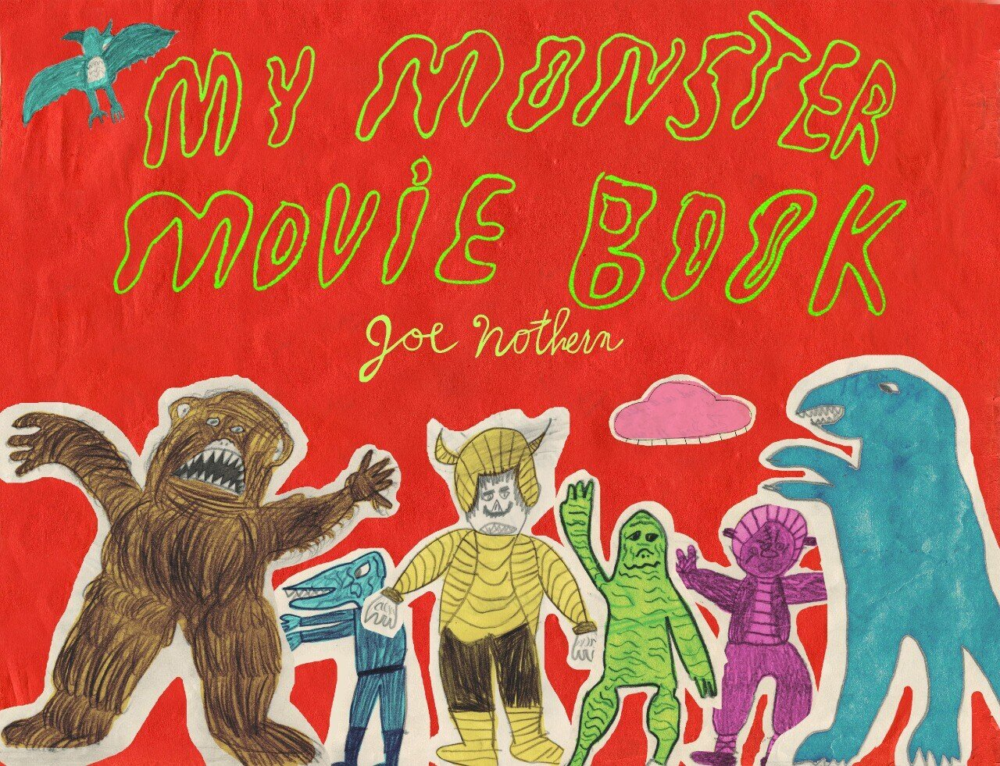

My Monster Movie Book
Por Joe Nothern
Edición a cargo y prólogo Eduardo Orenstein
21,5 × 28 cm · Tapa blanda con solapas · 140 pp.
Joe Nothern a los 8 años empezó a dibujar "My Monster Movie Book", su libro de monstruos de películas, que siguió completando entre 1962 y 1966, cuando ya tenía 12 años. Es fácil imaginar a este niño atrapado por los rayos catódicos de la televisión en blanco y negro y los tentáculos de invasores extraterrestres. Esta es la edición facsimilar de su álbum de dibujos, con texto bilingüe inglés y español y las filmografías de las películas ilustradas. El niño Joe se preocupó de comentar el argumento de cada película, convirtiéndose en apóstol cinematográfico al recomendar: "Asegúrate de verla."
Comprar